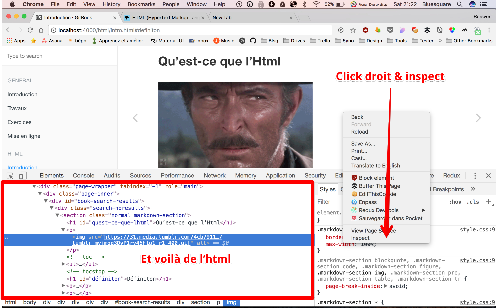

Last modified: Thu Feb 07 2019 22:30:41 GMT+0100 (Central European Standard Time)
Qu’est-ce que l’Html

Définiton
HTML signifie « HyperText Markup Language » qu'on peut traduire par « langage de balises pour l'hypertexte ». Il est utilisé afin de créer et de représenter le contenu d'une page web. D'autres technologies sont utilisées avec HTML pour décrire la présentation d'une page (CSS) et/ou ses fonctionnalités interactives (JavaScript).2
De quoi a-t-on besoin pour coder de l’html?
- Un navigateur (pour visualiser)
- Un editeur de texte (VsCode, Atom, Sublime Text, TextEdit,…)
- Votre gestionnaire de fichiers (le finder sur Mac)
A quoi ça ressemble?
Démarrez votre navigateur et visiter n’importe quelle page web.

Ca fait peur mais en fait c’est très simple. Bientôt vous serez tous parfait bilingue HTML/Français Français/HTML.
Un navigateur est un traducteur
Le webdesign en 4 minutes - http://jgthms.com/web-design-in-4-minutes/#share
Les balises
En HTML une balise est utilisée pour créer un element.
Le nom d’un élément HTML est le nom utilisé dans des chevrons comme par exemple
<p></p>
pour un paragraphe. Notez que le nom de la balise fermante est précédé par un caractère barre oblique. 3
</p>
Ne pas inclure une balise de fermeture est une erreur fréquente chez les débutants, et peut conduire à des résultats étranges.
Pour vous aider:
- balise = boite / contenu. Poupée russe (2 parties sauf certaines)
- html = les murs de la maison
- head = grenier (ce quon ne voit pas)
- body = le salon
Premier squelette de page
<!DOCTYPE html>
<html>
<head>
<meta charset="utf-8" />
<meta name="viewport" content="width=device-width" />
<title>Ma page</title>
</head>
<body>
Hello world
</body>
</html>
3. https://developer.mozilla.org/fr/docs/Glossaire/balise) ↩
2. https://developer.mozilla.org/fr/docs/Web/HTML) ↩